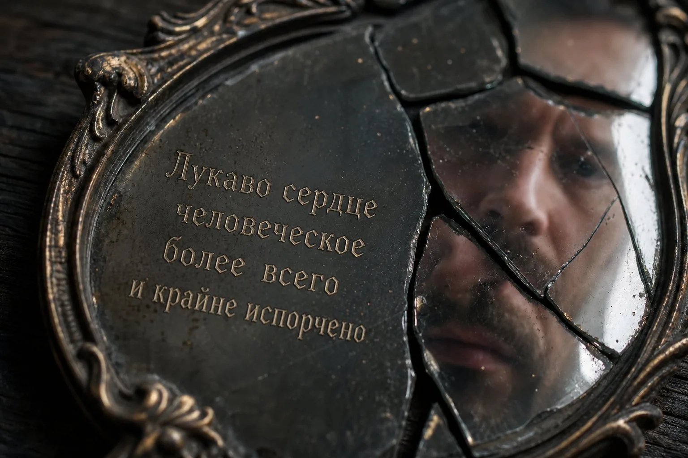
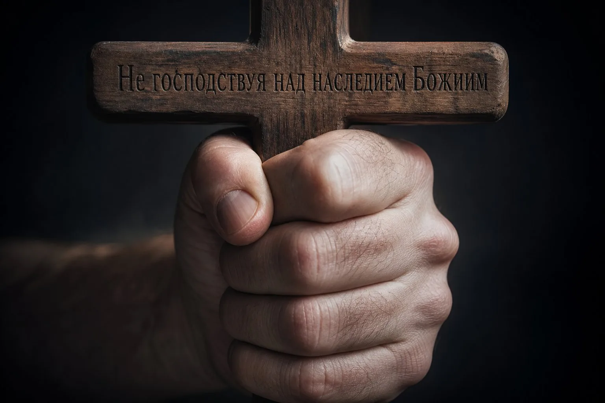
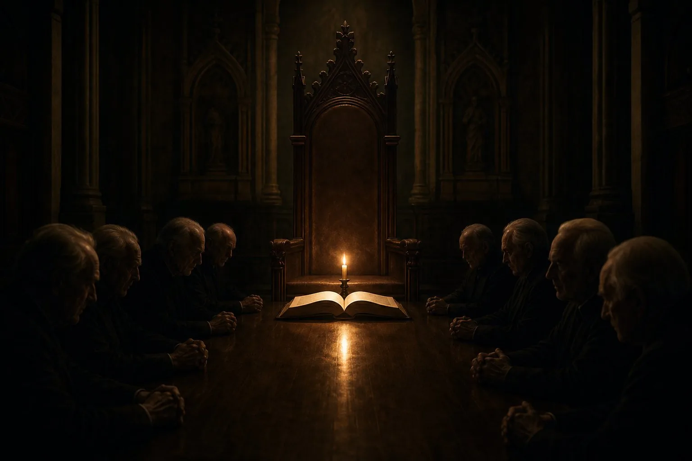

20 антисоветов, как пастору разрушить своё служение

Пасторское служение почти никогда не разрушается в один день. Чаще это не обвал, а медленное смещение внутренних опор: любовь к стаду уступает место любви к собственному положению, а Писание из света для совести незаметно превращается в инструмент управления. Снаружи община ещё может выглядеть собранной, сильной и даже духовно успешной; внутри же уже складывается не дом Божий, а система самосохранения.
Идущий этим путём пастор редко начинает как сознательный разрушитель, решивший подчинить себе церковь. Обычно всё начинается гораздо прозаичнее — с расслабления плоти и первых уступок самолюбию. Как Давид, который в час войны остался отдыхать на крыше, увидел, пожелал и дал сердцу лишнюю свободу, — так и служитель может постепенно привыкнуть к собственному статусу. Ему начинает нравиться, что последнее слово остаётся за ним; уговаривать и убеждать кажется утомительным, а давление авторитетом — быстрым и эффективным. Он оправдывает маленькие компромиссы, бережёт свой комфорт, позволяет эгоизму говорить громче совести. Авторитарность чаще рождается не из большого злого замысла, а из цепочки мелких, нераскаянных уступок самому себе. И на ранних этапах человек обычно ещё понимает, что в нём уже что-то сдвинулось не туда.
Прежде чем разбирать устройство такой системы, нужно сделать несколько необходимых различений. Без них статью легко прочитать однобоко, а значит — несправедливо. Нам нужна не новая дубина против пасторов, а трезвое библейское различение.
Первое. Ниже речь идёт не о случайных человеческих ошибках и не об одиночных срывах лидера от усталости. Речь идёт о системе. Разовая ошибка пресвитера исправляется открытым признанием и изменением поведения; система же воспроизводит себя, прикрывает себя и умеет жить даже тогда, когда отдельные её части уже заметно поражены гнилью. Именно поэтому люди внутри таких общин порой годами не могут ясно назвать проблему: формально всё выглядит правильно, Библия цитируется верно, язык благочестия безупречен, а внутри при этом грех последовательно защищён от света.
Особая черта такой системы — незаметность запуска. Требования к тотальной лояльности редко выставляются сразу. Новых людей обычно встречают с особой теплотой, которая выглядит как подлинное первохристианское братство. Человека видят, ценят, называют «рождённым для этого места». Только позже он замечает, что тепло оказалось условным, а за первоначальным принятием скрывались ожидания, о которых никто не сказал вслух. Так работает постепенное нарастание требований: человек не может вспомнить ни одного момента, когда добровольно согласился на то, во что превратилась его жизнь в этой системе.
Ещё одна тонкость, которую многие замечают, но с трудом называют: неписаные правила. В здоровой церкви вопросы разрешены и не стоят человеку дорого. В закрытой системе правила тоже есть — но их никто не формулирует вслух. Никто не объявлял официально: «О финансах спрашивать нельзя», «Тех, кто ушёл, здесь не защищают» или «Несогласие с пастором всегда оборачивается против несогласного». Люди обнаруживают эти правила единственным доступным способом — случайно нарушив их. Если вы несколько раз замечали, что «не то сказали», и за этим следовало мгновенное охлаждение руководства, — вы столкнулись именно с этим.
Второе. Не каждое строгое слово пастора — это насилие. Не каждое обличение — манипуляция. Не каждый жёсткий разговор — признак нездоровой системы. Пастор, который называет грех грехом, который применяет церковную дисциплину по Слову, который говорит неудобную правду — делает своё законное дело перед Богом. Это может быть больно. Это может восприниматься как личная несправедливость. Но боль от обличения и боль от злоупотребления — это принципиально разные вещи, и важно их различать. Первая ведёт к покаянию, свободе и исцелению. Вторая — к контролю, зависимости и духовному истощению. Пастор, который обличает по-библейски, готов выслушать встречные аргументы и сам стоять под Словом. Пастор, который злоупотребляет, — нет.
Третье — и, пожалуй, самое важное. Эта статья не о том, что все пасторы — скрытые разрушители. Она о том, как легко скатиться в разрушение и как важно этому сопротивляться. Многие служители верны, честны и мужественно борются с соблазнами власти. Многие платят дорогую цену за непопулярные решения, несут служение с чистой совестью и подлинным смирением. Эта статья — не их портрет. Это предупреждение для всех нас: потому что ни один из нас, кто несёт ответственность за других, не застрахован от того, чтобы начать защищать не Христа, а своё место рядом с Ним.
Эта статья использует несколько психологических и социологических терминов как рабочие категории — не как клинические диагнозы и не как приговоры конкретным людям. Коротко об основных:
- Газлайтинг — систематическое внушение собеседнику, что его восприятие реальности неверно («тебе показалось», «ты всё преувеличиваешь», «никто этого не говорил»), пока он сам не начнёт сомневаться в собственной памяти и трезвости.
- Выученная беспомощность — состояние, в котором человек после долгих повторяющихся попыток что-то изменить и неизменно отрицательного результата перестаёт пробовать, даже когда возможность измениться появляется.
- Гомеостаз системы — стремление любой устойчивой социальной группы поддерживать привычное равновесие; когда кто-то называет проблему вслух, остальные часто давят на него не потому, что он не прав, а потому, что он нарушает привычный баланс.
- Утопленные затраты — психологический эффект, когда человек продолжает участвовать в чём-то нездоровом не из-за разумных оснований, а потому, что слишком много уже вложил — времени, репутации, отношений, — и уйти ощущается как «обесценить всё это».
Узнать описание — не значит автоматически диагностировать. Это значит получить язык для проверки; дальнейшее различение требует фактов, свидетелей, времени и зрелого внешнего голоса.
Тяжёлый конфликт
- Обе стороны могут говорить и быть услышанными в равной мере.
- Факты проверяются открыто, а не заменяются субъективными впечатлениями.
- Люди имеют право ошибаться и открыто признавать это.
- Главная цель — восстановление библейской истины и мира в Теле.
Нездоровая система
- Одна сторона полностью контролирует площадку, язык и каналы информации.
- Факты тонут в ярлыках, намёках и «духовных диагнозах».
- Лидер или совет почти никогда не признаются неправыми вслух.
- Главная цель — сохранить лицо, удержать власть и управляемость овец.
Двустороннее зеркало: это работает в обе стороны
Писанием способны злоупотреблять обе стороны конфликта: и пастор, использующий его как рычаг личной власти, и прихожанин, прячущийся за ним от законного библейского обличения. «Не судите» (Мф. 7:1) в устах человека, уклоняющегося от дисциплины, — такая же закваска фарисейская, как «не прикасайтесь к помазаннику» в устах пастора, уклоняющегося от подотчётности. Эта статья о пасторских патологиях — но не потому, что общины безупречны. Просто у пастора власти больше, а значит, и ответственности больше. Антидот для обеих сторон — в конце.
Двустороннее зеркало: тайные коалиции общины
Заговоры и нашептывание: В то время как лидер может окружать себя льстецами, члены общины нередко формируют свои тайные коалиции. Писание называет это грехом наушничества (евр. נִרְגָּן — нирган — «клеветник, доносчик») и разделений (αἵρεσις — «партия, фракция»).
Вместо того чтобы прийти к пресвитеру открыто и высказать свои библейские опасения наедине, недовольные прихожане начинают «собирать коалиции» на домашних группах, в личных чатах и коридорах. Они подрывают авторитет верного служителя, нашептывая сплетни и вырывая его фразы из контекста. Это не библейское созидание, а мятеж и попытка перехвата власти людьми, ищущими своего, а не Христова.
Но нужна точность. Не всякий разговор с другим зрелым братом — сплетня. Иногда человек действительно не может разобраться один, боится ошибиться, отделяет факты от эмоций и ищет свидетеля или внешний мудрый совет. Разница в духе и цели: зрелый человек ищет свет, проверяемость и восстановление; гордый человек ищет лагерь, давление и победу своей стороны. Нельзя запрещать всякий совет под предлогом «не сплетничай», но нельзя и превращать боль в кулуарную кампанию.
Двустороннее зеркало: шантаж со стороны прихожан
Финансовые и численные рычаги: Манипуляции инструментами контроля могут осуществлять и прихожане по отношению к верному пастору.
Типичный сценарий — когда состоятельные спонсоры или влиятельные семьи общины негласно шантажируют пресвитера: «Если вы проповедуете на эту неудобную тему или не назначите моего зятя диаконом, мы урежем пожертвования или уйдём, забрав треть общины». Это использование финансовых ресурсов и численного превосходства как инструмента давления на пасторскую совесть. Прихожане совершают тот же грех господства, пытаясь подчинить Слово Божье своим корыстным интересам.
Двустороннее зеркало: лицеприятие снизу
Члены общины могут применять тот же принцип: к пастору, который им нравится, — снисходительны, к тому, кто им неудобен — беспощадны. Один и тот же поступок у «своего» объясняется «тяжёлой нагрузкой», а у «чужого» — «дурным характером».
Бог говорит: «Не судите по наружности, но судом праведным судите» (Ин. 7:24). Если вы не можете оценивать действия лидера одинаково вне зависимости от того, нравится он вам лично или нет, вы находитесь в той же ловушке лицеприятия — просто с другой стороны баррикад.
Любая манипуляция, работающая сверху вниз, может работать и снизу вверх. Важно судить праведным судом, а не по лицам.
Откуда это берётся
Прежде чем подвести финальный итог, стоит остановиться и спросить: откуда это берётся в Теле Христа? Потому что без понимания корней любая статья о патологиях власти превращается в отстранённый каталог чужих уродств. А Писание никогда не показывает грех как проблему исключительно «других людей». Оно показывает грех как то, на что потенциально способно абсолютно любое человеческое сердце, — в том числе моё собственное.
За каждым из описанных антисоветов стоит фундаментальная духовная подмена: идолопоклонство перед служением. Когда служение, миссия или церковная структура перестают быть средством поклонения живому Богу и превращаются в средство поклонения самому себе — через успех, признание, численные масштабы и контроль. Это классическая ловушка падшего сердца. Неудовлетворённая потребность в собственной значимости легко находит себе «святую» нишу.
Это может быть давняя рана отвержения, которую пастор неосознанно компенсирует, собирая вокруг себя безмолвных, послушных людей. Это может быть страх хаоса — и тогда жёсткий контроль преподносится как «библейский порядок». Это может быть незажившая обида от прошлого предательства в служении — и тогда болезненная подозрительность к новым людям маскируется под «пастырскую проницательность». Корни редко лежат на поверхности. Поэтому грех так искренне путает себя с добродетелью: «я ведь не для себя лично стараюсь, а ради блага церкви!»
Писание знает эти корни. Саул, первый царь Израиля, начинал искренне смиренным: «разве я не из самого малого колена?» (1 Цар. 9:21). Он был видным, статным, казалось — кротким. Но именно потому, что его сердце не было предано Богу, его статность стала инструментом плоти, а не слуги. Постепенно страх потерять влияние и трон превратил его в человека, который преследовал Давида, погубил священников Номвы и в ночь перед смертью искал ответа у волшебницы. Его падение заняло годы, и каждый шаг казался ему оправданным: «защита помазанника», «сохранение царства», «стабильность Израиля». Он думал, что охраняет Божий порядок, — на деле охранял себя от Бога.
Оба падали. Оба были помазанными. Оба согрешали тяжело. Но их судьбы разошлись не из-за тяжести их греха — а из-за того, что произошло в момент обличения. Это линейка не для осуждения, а для честного самоиспытания каждого, кто несёт ответственность за других.
Саул
- Начинал с внешнего смирения, которое не укоренилось в сердце. Когда пришло первое испытание, статность обернулась оружием плоти.
- Первый грех — нетерпение: принёс жертву сам, не дождавшись Самуила (1 Цар. 13). Оправдание: «обстоятельства требовали». Начало дороги: мои решения = Божья воля.
- Второй грех — неполное послушание Богу, прикрытое послушанием народу (1 Цар. 15). Оправдание: «я пощадил лучшее ради жертвы Господу». Начало двоедушия.
- В момент обличения — попытка сохранить лицо: «почти меня ныне перед старейшинами народа моего» (1 Цар. 15:30). Слова покаяния при отказе принять его плоды.
- Постепенно теряет способность различать — и начинает видеть врагов в верных: в Давиде, в Ионафане, в священниках Номвы.
- Пал в битве за Израиль — но пал ещё раньше внутри, в идолопоклонстве своим страхам. Гибель тела только обнажила то, что давно было мертво в духе.
Давид
- Греховный, как все: прелюбодеяние, ложь, соучастие в убийстве Урии — грехи, которые могли бы уничтожить любого. И уничтожили бы, если бы не одно.
- Нафан произносит: «ты — тот человек» (2 Цар. 12:7). И Давид не выстраивает оборону. Не спасает лицо. Не говорит «но я же имел добрые намерения». Рухнул: «согрешил я пред Господом» (2 Цар. 12:13).
- Псалом 50 — не пресс-релиз и не публичный жест. Это документ рухнувшей человеческой самодостаточности. «Я признаю преступления мои, и грех мой всегда предо мною» — не стратегия выживания, а встреча с живым Богом.
- Его сердце — не идеальное, а ищущее: фраза «муж по сердцу» Бога (1 Цар. 13:14; Деян. 13:22) не означает «без греха»; она означает сердце, ориентированное на Бога, а не на собственный трон.
- Принял последствия: смерть младенца, разорённая семья, восстание Авессалома. Не объявил их гонением и «атакой врага на служение». Понёс.
- До конца жизни остался человеком, которого можно было остановить Словом. Именно это — главный критерий, а не безгрешность.
Ирод Антипа, обезглавивший пророка Иоанна Крестителя, тоже не проснулся в один день тираном. Он начал с того, что не захотел потерять лицо и авторитет перед гостями на пиру (Мк. 6:26). Один компромисс с совестью ради одобрения людей — и вот уже на блюде голова пророка. Конкретная цепочка событий — клятва, просьба Иродиады, месть — уникальна; никто не утверждает, что каждый компромисс заканчивается убийством. Урок не в механической предопределённости, а в направлении: страх перед мнением окружающих, поставленный выше страха Божия, открывает в человеке такие двери, о которых он сам в начале пути даже не подозревал. Любовь к первому месту и страх перед мнением окружающих — два самых тихих и самых мощных двигателя духовного разрушения. Фарисеи, которых Иисус назвал «окрашенными гробами» (Мф. 23:27), были ревнителями закона, готовыми платить цену за внешнюю чистоту. Но постепенно форма заменила жизнь. Они стали любить уважение на площадях и первые места в синагогах (Мф. 23:6–7). Кто ищет места, тот постепенно теряет способность видеть Бога.
Здоровая община
- Пастор стоит под Словом, а не над ним; он проверяем и подотчётен.
- Любой честный вопрос — повод к свету, а не автоматический признак бунта.
- Ошибки руководства признаются быстро, прозрачно и честно перед общиной.
- Братское несогласие с мнением пастора не приравнивается к нелояльности Богу.
- Совет пресвитеров — реальный коллегиальный орган разделения веса власти.
- Уходящих из общины людей благословляют и провожают с миром.
Система самосохранения
- Слово Божье цитируется как карательный инструмент удержания власти.
- Неудобный вопрос объявляется «духом критики», «бунтом» и грехом.
- Ошибки скрываются и замалчиваются «ради сохранения репутации служения».
- Любое несогласие клеймится как «угроза единству и видению церкви».
- Совет пресвитеров — декорация для придания видимости библейской законности.
- Уходящие люди планомерно очерняются и обсуждаются за их спиной.
Если совпадает несколько признаков — речь может идти уже не о тяжёлом характере лидера, а о системе. Это не математическая диагностика и не повод к поспешному ярлыку; это повод к молитвенной трезвости, проверке фактов и поиску зрелого совета.
- Вопрос к поступку лидера стабильно переводится в вопрос к сердцу спрашивающего.
- Подотчётность существует на словах, но не на деле.
- Неудобные люди постепенно теряют доступ, платформу и доверие.
- Репутация церкви начинает быть важнее правды.
- Покаяние лидера не ведёт к реальным последствиям и структурным изменениям.
I. Сердце и авторитет
1. Полюби не Христа, а первое место
Начни с сердца: не надо сразу падать в грубые, очевидные грехи. Достаточно, чтобы тебе стало дорого первое место. Пусть радует не то, что церковь возрастает во Христе, а то, что она всё плотнее завязана на тебя. Не просто служить — а быть незаменимым. Не просто пасти — а быть центром. Не просто заботиться — а распределять значимость: кто здесь «свой», кто «созрел», а кто пока пусть посидит в тени.
«Ему должно расти, а мне умаляться» (Ин. 3:30) — это прямой антипод диотрефства и жажды незаменимости.
Именно так рождается то, что по имени одного библейского персонажа можно назвать диотрефством. В конце первого века в одной из малоазийских общин человек по имени Диотреф — имя его, иронично, означало «вскормленный Зевсом» — вёл себя именно так: любил первенствовать, не принимал апостольского авторитета, злословил, изгонял верных. Апостол Иоанн зафиксировал это в своём третьем послании (3 Ин. 1:9–10) не как частный случай, а как вечное предупреждение: лидер может захотеть быть не слугой истины, а самовластным распорядителем над братьями. Тогда чужой дар начинает раздражать, чужая зрелость — тревожить , а чужое доброе влияние — восприниматься как угроза. Сильный брат уже не брат, а конкурент. Успешное служение без твоего участия уже не радость, а почти личное оскорбление.
Христоцентричное служение
- Искренняя радость от возрастания автономной зрелости святых.
- Делегирование реального влияния и готовность остаться незамеченным.
- Любовь к людям ради их спасения и укоренения во Христе.
Диотрефство (φιλοπρωτεύω)
- Ревность к чужим дарам и бессознательный саботаж чужих инициатив.
- Жёсткая концентрация всех каналов принятия решений на себе.
- Любовь к лояльности и постоянному эмоциональному подтверждению статуса.
Здесь важно понимать логику этого падения: любовь к первенству почти никогда не приходит грубо и явно. Она приходит под видом ревности о деле Божьем, под видом ответственности за церковь, под видом убеждения, что «никто другой не справится так, как я». Страх потерять контроль — один из самых сильных двигателей авторитарного лидерства. А если церковь стала для пастора единственным пространством, где он ощущает себя значимым, ценным и нужным, — тогда любая угроза этому пространству воспринимается как угроза его идентичности. И тогда он будет защищать не стадо, а своё место в стаде.
Тонкий корень: полюби не людей, а себя — и назови это «пастырской любовью»
Пастор постепенно перестаёт любить людей ради них самих. Он начинает любить их выборочно — тех, кто даёт ему то, в чём он лично нуждается: подтверждение его значимости, беспрекословное послушание, восхищение, ресурсы, удобную тишину. Тех, кто не даёт, он не любит. Или, точнее, не любит по-настоящему.
Это редко выглядит как откровенная нелюбовь. Чаще — как тепло, которое можно по расчёту включить и выключить. К лояльным — внимание, похвала, близость, мнимое доверие. К неудобным — вежливый холод, дистанция, формулы вида «мы молимся за тебя», полное отсутствие личных встреч. Пастор может искренне считать, что любит всех. Но его любовь — уже не та, о которой писал апостол Иоанн: «мы познали любовь в том, что Он положил за нас душу Свою» (1 Ин. 3:16). Это эгоистичная любовь, которая забирает, а не отдаёт. Любовь, которая ищет своего.
В реальной жизни мотивы часто бывают смешанными. Человек может искренне переживать за кого-то, молиться, помогать — и одновременно болезненно нуждаться в признании, послушании и восхищении. Но если эта смесь не разоблачается покаянием, эгоистичная часть постепенно начинает управлять всем. Тогда любовь становится выборочной: тёплой к полезным, холодной к неудобным, щедрой к тем, кто укрепляет статус лидера, и подозрительной к тем, кто укрепляет людей во Христе без его посредничества. Два простых вопроса на самоиспытание: будет ли он так же добр к человеку, когда тот перестанет быть полезным? Сохранит ли честь брата, который не согласился? Диотрефова любовь ищет в ближнем лишь зеркало собственной значимости.
Сценарий: В общине две сестры. Одна активно служит, помогает финансово, всегда поддерживает пастора. Другая иногда задаёт неудобные вопросы, но трудится в тайне не меньше. У первой умирает близкий родственник — пастор приезжает в тот же вечер, молится с семьёй, лично проводит похороны. У второй случается беда — приходит дежурный звонок от секретаря: «Мы молимся, Бог утешит». На похороны отправляют самого молодого помощника.
Механизм: Никто не сказал вслух: «вторая менее ценна». Но плоды пастырского сердца распределились ровно так. Пастор уже не замечает, что разделил стадо на «своих» и «терпимых». Он незаметно перестал отличать заботу о церкви от заботы о своём месте в ней. И когда приходит внешнее слово обличения, оно ему уже мешает. Не потому, что оно ложно, а потому, что напоминает: ты не центр, ты не Глава.
Тонкий корень: стань «великим богословом», которого уже нельзя учить
Есть ещё один путь к диотрефству — более приличный, более интеллектуальный, менее заметный с первого взгляда. Получи хорошее богословское образование, выучи языки, прочитай систематические богословия, научись спорить о терминах — и постепенно начни смотреть на простых членов церкви как на людей второго богословского сорта. Они «не понимают контекста», «мыслят слишком просто», «не знают экзегезы», «рассуждают поверхностно». И вот уже любой вопрос от обычного брата заранее обесценен не потому, что он неверен фактами, а потому что его задал «не тот образовательный уровень».
Это не аргумент против семинарии. Хорошее богословское образование — это дар Божий для созидания церкви. Пастор должен уметь обращаться со Словом точно, не поверхностно, не по наитию. Проблема начинается там, где знание перестаёт смирять и начинает отделять от людей. Павел писал: «знание надмевает, а любовь назидает» (1 Кор. 8:1). Образование даёт пастору не только ясность, но и силу: он умеет формулировать, доказывать, ставить диагнозы, разбирать тексты, убеждать людей. Если эта сила не соединена с глубоким смирением, она становится богословским снобизмом — не скальпелем для исцеления, а лезвием для доминирования.
В зачатке
- Часто поправляет людей по мелким терминам, даже когда это не помогает их душе.
- Отвечает на простые житейские вопросы слишком академически.
- Скрыто раздражается на «наивные» наблюдения членов церкви.
- Ссылается на книги и языки оригинала, когда можно было просто выслушать боль.
Когда уже серьёзно
- Любой несогласный автоматически объявляется «богословски неграмотным».
- Простые верующие воспринимаются как пассивная аудитория, а не как равные братья.
- Обличение превращается в холодную лекцию, а не в пастырское врачевание.
- Он органически не способен сказать «я не знаю» и физически неспособен учиться у паствы.
Сценарий: Сестра подходит после проповеди и осторожно говорит: «Мне кажется, этот текст ещё глубоко говорит о Божьей милости к упавшим». Пастор снисходительно улыбается: «Я понимаю вашу эмоциональную мысль, но здесь надо профессионально знать греческий текст, синтаксис и исторический фон первого века». Разговор закрыт. Она не спорила, она просто поделилась тем, как Слово коснулось её сердца. Но её замечание обесценено перед лицом его образованности.
Механизм: Пастор не отвечает на духовную мысль — он ставит между собой и человеком образовательную стену. Знание становится способом защитить себя от диалога. Он цитирует оригинальные языки не для того, чтобы приблизить смысл, а чтобы напомнить, кто здесь главный знаток. Он начинает использовать высокую доктрину как алиби: учение о Божьем суверенитете помогает ему холодно объяснить собственное безразличие к чужой боли, а богословие о греховности человека — оправдать административную жестокость.
Когда человек духовно здоров, он умеет произносить простые слова: «я не знаю», «надо подумать», «ты помог мне увидеть это яснее», «я, возможно, был неправ». Богословская гордость почти не умеет этих фраз. Ей нужно быть вечно объясняющей, определяющей и закрывающей вопрос. Но в Деяниях сказано, что люди, видя Петра и Иоанна, «узнавали, что они были с Иисусом» (Деян. 4:13). Не просто что они закончили школы. Это главный экзамен пастора-богослова: от его знаний становится больше Христа — или больше его собственного эго?
Сценарий: В церкви появляется брат с сильным, ярким даром проповеди. Сначала пастор искренне радуется: «Бог даёт помощников!» Но через несколько месяцев замечает, что люди после служения хотят говорить, пить кофе и делиться проблемами именно с этим братом. И вдруг его дар становится «проблемой». Появляются мягкие, подтачивающие комментарии: «он ещё не совсем духовно зрел», «ему нужно больше пастырского покрытия», «он не до конца понимает нашу уникальную специфику». И постепенно этот брат оказывается на глубокой периферии — формально не изгнанный, но полностью обезвреженный.
Механизм: Это не всегда осознанный злой умысел. Чаще — инстинктивная защита своего места. Пастор не говорит себе: «я боюсь конкуренции». Он говорит: «я отвечаю за стадо, я обязан защищать их от незрелого влияния». Но за этим фасадом бьётся страх оказаться заменимым.
Нередко такой пастор сам не замечает подмены. Он искренне думает, что ревнует о Христе, — хотя ревнует о положении. Разница между этими двумя ревностями незаметна снаружи, но различима по плодам: христоцентричная ревность радуется, когда кто-то другой делает Христа явным; эгоцентричная — при той же картине испытывает раздражение и ищет повод вмешаться. Сначала ты ставишь себя в центр, а потом удивляешься, что Христос остался лишь в конспекте проповеди, перестав быть живой Главой собрания.
2. Считай церковь своей вотчиной, а не Божьим стадом
Следующий шаг — незаметно стать хозяином. Не обязательно говорить это вслух. Достаточно мыслить так: моя церковь, мои люди, моё служение, моя кафедра, моя команда, моё видение.
В этот момент разговоры о Божьем стаде остаются в области теории, а на практике вступает в силу право владения. Это то самое κατακυριεύω, о котором Пётр предупреждал пресвитеров: «не господствуя над наследием Божиим» (1 Пет. 5:3). В такой системе любое несогласие — это уже не братский вопрос, а покушение на территорию. Любая инициатива — самовольство. Любое влияние помимо тебя — нарушение границы.
Есть один вопрос, который стоит задать себе честно и без уловок: если бы я не был пастором здесь, я бы остался в этой церкви? Не как гость с визитом и не как преходящий посетитель разового собрания — а как рядовой член, под нынешним служением, под нынешней атмосферой, под нынешней культурой? Если ответ уклончив или требует долгих внутренних оговорок — это уже ответ.

Церковь в такой модели перестаёт быть домом Божьим и становится личным хозяйством пастора, где он — главный распорядитель и охранник собственных рубежей. Страдает при этом не только паства. Страдает и сам пастор: потому что тот, кто стал хозяином вместо управляющего, взваливает на себя бремя, которое не предназначалось людям. Христос сказал «создам Церковь Мою» — и ключевое здесь слово «Мою». Когда пастор пытается взять это местоимение себе, он берёт не власть, а непосильную тяжесть. В Новом Завете пасторская власть — не собственническая, а порученная. Пастор — не источник власти, а управитель в доме Другого. Он ведёт не своё предприятие, а Божье стадо. Чем чаще пастор говорит внутри «моя церковь», тем сильнее он заглушает в себе Христово: «Церковь Моя».
3. Болезненно защищай свой авторитет
Как только сердце привыкает к первенству, авторитет становится предметом постоянной самозащиты. Начни чаще напоминать, что тебя поставил Бог. Говори, что Святой Дух поставляет пастырей, а значит, вопрос к твоим решениям — это уже не просто вопрос к человеку. Постепенно выстраивай мостик: непочтение ко мне — непочтение к Божьему порядку; сопротивление мне — сопротивление действию Духа.
Приём удобен до неприличия. Вместо того чтобы обсуждать твои поступки, люди начинают бояться самой темы. Не потому, что ты доказал правоту, а потому, что перенёс разговор на другой этаж: ты сейчас борешься не со мной, а с тем, кого Бог поставил. Этажом ниже остаются факты. На этом — уже почти Сам Господь. Спорить становится не только трудно, но как будто неприлично.
Прихожанин: — Мне кажется, то, что произошло с братом Николаем на совете, было несправедливо.
Пастор: — Ты сейчас говоришь о решении, которое приняло руководство под очевидным водительством Духа. Ты уверен, что твоё собственное сердце сейчас находится в правильном положении перед Богом, чтобы судить об этом?
И всё. Разговор закончен. Не потому, что аргументы исчерпаны, а потому что любой следующий шаг теперь выглядит как борьба с Богом. По воздействию это духовная подмена реальности: она подрывает доверие человека к собственной совести и памяти. Когда вопрос к поступкам пастора систематически переводится в вопрос о состоянии сердца спрашивающего, человек постепенно теряет доверие к собственному восприятию реальности. Он начинает думать не «это объективно несправедливо» — а «почему во мне столько критики?». Не «здесь что-то неправильно» — а «что неправильно во мне, раз я это замечаю?». Подозрение с ситуации переносится на самого наблюдателя.
В Гал. 2:11–14 Павел открыто противостал Петру, хотя тот был апостолом. Высокий духовный статус и «помазание» не отменяют проверяемости и не делают лидера непогрешимым.
Такой пастор, как правило, умеет хорошо читать собрание. Но он знает, кого похвалить, кого приободрить и кого поставить в пример именно сейчас — не ради человека, а ради устойчивости системы. Умение читать настроение становится у него картой местности: он видит, кто потенциально опасен, кого нужно нейтрализовать заранее и чьё одобрение сегодня особенно ценно. Чуткость без смирения — это инструмент власти, а не пастырская добродетель. Так создаётся сакральная неприкосновенность. Фраза «не прикасайтесь к помазаннику», подхваченная лояльными, становится щитом от любой проверки. Но пастырская власть не абсолютна и не самодостаточна. Она действует только как служение Слову — и теряет библейское основание там, где начинает защищать человека, а не Христа.
«Если у тебя есть вопрос к моим действиям — давай разберём его по Писанию и фактам, не объявляя сам твой вопрос мятежом.»
Здесь важна честная оговорка в обратную сторону. Иногда сопротивление членов общины законной пастырской дисциплине маскируется под «я просто задаю вопросы» или «пастор не имеет права судить, он сам не без греха». Различение этих двух ситуаций требует трезвости, конкретных фактов и внешнего зрелого голоса. Именно поэтому в здоровой системе есть и проверяемый пастор, и подотчётная Слову паства — а не только один виновный по умолчанию.
4. Избегай подотчётности и выстраивай автономию
Не допусти, чтобы тебя действительно могли проверить, остановить или серьёзно разобрать. О слове «подотчётность» можно говорить спокойно — пусть оно украшает документы и братские беседы. Важно, чтобы оно оставалось декоративным. Пусть рядом будут формы, комиссии, советы, старшие братья, объединения, но только до тех пор, пока они не пытаются реально влезть в дело. В Титу 1:7 Павел прямо говорит, что епископ должен быть не упрямым, не настаивающим на своём вопреки всем. Но здесь упрямое отстаивание собственной автономии становится фундаментом системы.
Если кто-то из внешних служителей, старших братьев, союзов или соседних церквей начинает задавать неудобные вопросы — не отвергай их напрямую. Выражай озабоченность ими самими: я переживаю за этого брата — мне кажется, кто-то дал ему одностороннюю картину, и он, сам того не зная, оказался инструментом в чужих руках. Фокус смещается: уже не ты под вопросом, а тот, кто «использовал» хорошего человека в своих целях.
Парадокс в том, что отказ от реальной подотчётности лишает пастора самой ценной защиты — защиты от самого себя. Внешний голос, способный остановить лидера в момент слепоты, — это дар, а не угроза. Павел обличил Петра в Антиохии открыто и при всех, потому что поступок апостола противоречил истине Евангелия (Гал. 2:11–14). Если Пётр нуждался в исправлении, то ни один современный пастор не вправе строить вокруг себя воздух небесной непогрешимости. Подотчётность — не унижение служителя. Это милость Божия к нему самому. Путь глупого прямой в его глазах, но мудрый слушает советы (Притч. 12:15). Принять, что твоё сердце так же лукаво, как и у всех людей (Иер. 17:9) — основание трезвости.
«Если я не подотчётен никому, кроме своих безоговорочных сторонников, это опасно прежде всего для меня самого.»
- Радуюсь ли я, когда люди возрастают без моего участия?
- Могу ли я услышать несогласие, не чувствуя угрозы?
- Есть ли рядом люди, которые реально могут меня остановить?
Двустороннее зеркало: манипуляции со стороны общины
Разрушать служение может не только пастор. Часто лжебратья (ψευδάδελφος) или манипулятивно настроенные прихожане используют те же техники «наоборот».
Оружие перевернутого обвинения: Когда верный пастырь, руководствуясь Писанием, с кротостью призывает члена церкви к дисциплине или обличает грех (например, клевету или финансовую нечистоплотность), человек тут же достаёт ярлык «авторитаризма» и обвиняет пастора в «газлайтинге» или «злоупотреблении помазанием». В данном случае прихожанин извращает библейские заповеди о свободе совести, чтобы уклониться от справедливого обличения. Такое поведение проистекает из греха гордости и нежелания подчиняться Слову Божьему, когда оно обличает лично нас.
II. Команда и ближайшее окружение

Когда пастор закрепил в своём сердце любовь к первенству и выстроил автономию от внешней проверки, следующий шаг почти неизбежен: ему нужны люди рядом — но только правильные. Те, кто будут обеспечивать защиту, а не создавать сложности. Так сердечные приоритеты начинают формировать кадровую политику. И именно здесь система начинает выглядеть как «братский совет», оставаясь на деле одиночеством одного.
5. Собери рядом с собой защитников, а не советников
В 3 Цар. 22 Ахав предпочитает 400 удобных голосов одному правдивому. Михей ненавистен ему не потому, что лжёт, а потому, что отказывается обслуживать царскую версию реальности. Совет «своих» всегда говорит то, что лидер хочет услышать.
Если хочешь надолго удержать систему, не набирай людей, способных тебе возразить. Тебе нужны не советники — защитники. Не братья — адвокаты. Не те, кто поможет увидеть твою слепоту, а те, кто убедительно объяснят, что никакой слепоты нет. Притчи говорят, что при многих советниках народ благоденствует (Притч. 11:14). Здесь советников заменяют телохранителями репутации — и остаётся прежняя форма, только пустая внутри. Так формируется внутренний круг, единственная задача которого — оберегать лидера от последствий его собственных решений.
В закрытых религиозных системах кадровое сито работает в сторону ослабления среды. Кандидаты с независимым суждением или глубоким духовным авторитетом отсеиваются под предлогом «сложного характера» или «неготовности», уступая место бесконфликтным исполнителям. Железо железо острит (Притч. 27:17) — но только тогда, когда пресвитеру позволено быть железом, а не воском.
Сценарий: В совете общины есть два брата. Один — прямой, задаёт детальные вопросы, не боится спокойно сказать «я не согласен с предложенным распределением средств». Второй — мягкий, всегда поддерживает пастора, никогда не конфликтует. Постепенно первый объявляется «слишком тяжёлым», «резким» и «не понимающим специфику». Второй — «зрелым», «мирным» и «надёжным». Через несколько лет первый брат уходит сам, устав от глухой стены, а в совете остаются только послушные «мирные».
Механизм: Легитимизация без контроля. Многолетнее отсеивание неудобных пресвитеров лишает совет его первоначальной библейской функции — быть местом совместного различения воли Бога, превращая его в церковный отдел автоматического согласования.
6. Оставь множественность лидеров на бумаге
Говори о множественности пресвитеров, о совете, о команде, о совместном принятии решений. Это звучит здраво и библейски. Главное, чтобы в реальности один голос был решающим, а все остальные — подтверждающими. Это классическое лицемерие (ὑπόκρισις) — театральная игра, ношение маски с целью скрыть истинную природу автократии.
Снаружи всё выглядит красиво. А по сути решения не обсуждаются, а обрамляются декорациями. Это одна из самых тихих и эффективных форм разрушения: библейская форма, наполненная антибиблейским содержанием.
Здоровый совет
- Братья открыто дискутируют, спорят и спокойно не соглашаются по делу.
- Решения принимаются реальным голосованием или глубоким консенсусом.
- Пастор — первый среди равных братьев, стоящий под общим контролем.
- Можно свободно и безопасно задать вопрос о любой сфере жизни общины.
Совет «защитников»
- На собраниях совета царит безмолвная тишина и быстрая покорность.
- Пастор излагает решение как «уже полученное им лично от Бога видение».
- Пастор — единственный реальный лидер, остальные — лишь технические исполнители.
- Любые вопросы и уточнения воспринимаются как «недостаток духовного доверия».
7. Бойся сильных и одарённых рядом с собой
Сильные и зрелые братья — опасный материал для авторитарной системы. Они могут видеть, различать, задавать точные вопросы, не зависеть эмоционально от твоего расположения и не путать почтение с безмолвием. Корень этого страха — зависть, которую Писание называет «гнилью для костей» (Притч. 14:30). Это та самая динамика, которая превратила Саула в преследователя Давида: «И с того дня подозрительно смотрел Саул на Давида» (1 Цар. 18:9).
Никогда не держи их на очевидной дистанции — это слишком заметно. Хвали их публично, ставь на видные роли, демонстрируй их дар церкви. Просто не давай им реального влияния: их голос не звучит там, где принимаются ключевые решения, их инициативы принимаются к рассмотрению и тихо гаснут, их замечания выслушиваются с видимым уважением и принципиально не учитываются.
Сценарий: Одарённый проповедник привлекает внимание общины. Пастор ставит его руководить крупным отделом, хвалит со сцены. Но на внутренних стратегических встречах его предложения планомерно игнорируются, а инициативы тонут в согласованиях. Через год брат понимает, что лишён реальной возможности влиять на курс служения. Он в команде, но без голоса.
Механизм: Человек получает видимый статус, но не имеет веса. Он не может даже открыто пожаловаться на притеснение — его ведь хвалят публично. Почёт становится формой изоляции.
8. Называй удобных «зрелыми», а прямых — «сырыми»
Это один из самых тонких приёмов. Не говори себе: «мне нужны льстецы». Говори благочестивее: «мне нужны зрелые, мирные, верные, надёжные». Только под зрелостью понимай способность не возражать тебе и не тревожить комфортную атмосферу. Это лицеприятие: свои весы вместо Божьих.
Так происходит незаметная подмена: под видом требования к духовной зрелости выстраивается требование к внутренней зависимости. Смирение начинает означать не победу над самолюбием, а сдачу своего суждения. Покорность начинает означать не уважение к Богом установленному порядку, а уважение к конкретному человеку вне зависимости от его правоты. Притчи говорят иначе: «Искренни укоризны от любящего» (Притч. 27:6). Прямое слово зрелого брата может быть неприятным, но оно — Божья милость.
Сценарий: Брат задаёт вопрос о странном кадровом решении пастора. Тот отвечает: «Я вижу твою обеспокоенность, брат. Но ты из-за возраста ещё не совсем понимаешь специфику управления церковью. Тебе нужно больше времени для созревания. Мы ценим твой пыл, но пока не готовы доверить тебе влияние». Вопрос по существу дела закрыт.
Механизм: Вместо ответа на факт — пастор даёт субъективную оценку личности спрашивающего. Истинный вопрос растворяется в характеристике того, кто его посмел задать. В итоге в церкви наступает ледниковый период: люди начинают говорить одинаково, осторожничать одинаково, молчать одинаково.
Той же техникой могут пользоваться и прихожане — подробнее об этом в блоке «Двустороннее зеркало» выше.
III. Инструменты контроля
Итак, сердце выстроено под первенство, автономия защищена, команда подобрана. Теперь нужен инструментарий. Система нуждается в способах удержания — не просто личных предпочтениях лидера, а в методах, которые работают на всю общину. Именно здесь начинается самый опасный участок спирали.
9. Преврати кафедру в карательный орган, а Писание — в рычаг
Это один из самых страшных видов святотатства: взять то, что Бог дал для исцеления, света и обличения греха, и превратить в гидравлический рычаг давления. Не нужно лгать открыто. Достаточно сделать так, чтобы Слово начало обслуживать твои интересы. В Писании это называется коварством: когда святыня используется как ловушка управления.
Сценарий: В общине три влиятельные семьи задали вопросы о расходовании целевых пожертвований. В следующее воскресенье пастор выходит за кафедру и берёт текст о ропоте израильтян в пустыне против Моисея. Конкретные имена не называются, но приводятся такие контекстные намёки и бытовые цитаты из частных бесед, что весь зал замирает, безошибочно понимая, в кого целятся стрелы. Спрашивавшие оказываются морально изолированы без возможности объясниться.
Механизм: Публичное наказание, облечённое в форму библейского наставления. Перенос разговора: «враг» объявляется бунтующим не против административных методов человека, а против Самого Бога. Верный проповедник раскрывает текст, чтобы привести людей ко Христу. Злоупотребляющий — подбирает текст, чтобы наказать человека. Первый служит Слову. Второй прячется за него.
«Если мне нужно поговорить с человеком лично, я не буду делать этого через кафедру. Кафедра — для назидания всей церкви, а не для адресных ударов.»
10. Строй святую пропаганду и управляй картиной реальности
Чтобы система выжила, ей нужна монополия на толкование происходящего. Постоянно применяй управление впечатлениями: говори о победах, о росте, о «плодах» — и превращай всё это в дымовую завесу. Бог называет это иначе — «врачевание ран легкомысленно»: когда каждая трещина замазывается пластырем бодрого отчёта, пока под штукатуркой тихо делает своё дело гниль (Иер. 6:14).
Сделай ещё один полезный шаг: раздели людей на «строителей» и «ропотников». В жёстких человеческих системах несогласных всегда стараются представить вредителями общего дела, а лояльных — единственными созидателями. Полезно также приучить людей к одобренной информационной среде: «не читайте горьких людей», «не слушайте тех, кто снаружи, они не знают нашей ситуации», «не загрязняйте сердце чужим духом». Результат один: доступ к внешнему свидетельству становится морально подозрителен.
Сценарий: На годовом собрании пастор увлечённо докладывает: «Бог великим образом благословляет нас! Мы открыли новые проекты, плоды очевидны!» При этом он умалчивает, что за год общину покинули 15 ключевых служителей, а бюджет находится в глубоком дефиците. Любой, кто пытается поднять эти цифры, встречает отпор: «Вы концентрируетесь на негативе, в вас говорит дух ропота».
Механизм: Создание иллюзорной реальности. Окрашивание фасада (фарисейские «окрашенные гробы») скрывает внутренний распад. Сюда же относится несовпадение пастора на сцене и за кулисами: на сцене он мягкий и плачущий, за закрытой дверью — резкий и нетерпимый к вопросам. Человек, столкнувшийся с этим, начинает сомневаться не в лидере, а в своей адекватности.
11. Управляй страхом, стыдом и доступом к благоволению
Контроль не всегда строится на крике. Гораздо чаще пастор использует эмоциональные качели. Сегодня он осыпает тебя теплом и вниманием, а завтра — проходит мимо, демонстративно не глядя в глаза. Это старая техника «приближения и опалы»: человек впадает в состояние постоянной тревоги, пытаясь угадать, чем он провинился, и удваивает усилия, чтобы вернуть благоволение лидера. В Писании родственный распад внутренней цельности назван двоедушием (Иак. 1:8 — о неустойчивости человека во всех путях своих). У Иакова речь о нестабильности веры в молитве; пасторская тактика «приближения и опалы» использует ту же двойственность, только применяет её к другому человеку, а не к Богу.
Непредсказуемое чередование одобрения и демонстративного холода может постепенно расшатывать внутренние опоры человека и привязывать его к настроению лидера. Он начинает подавлять критические сигналы совести не потому, что слаб, а потому что хочет удержаться в безопасном поле принятия. Страх человеческий ставит сеть (Притч. 29:25).
Сценарий: Брат высказал сомнение по поводу авторитарного решения совета. Прямого конфликта не произошло. Но в следующее воскресенье пастор проходит мимо него, не пожимая руку. Через неделю брата без объяснений убирают из сетки расписания служений. Кто-то из внутреннего круга «заботливо» интересуется: «Брат, мы заметили изменения в твоём духе. Всё ли у тебя нормально в отношениях с Богом?»
Механизм: Наказание без приказа. Авторитарный пастор часто действует через таких прокси-посредников. Или через оружие молитвы: «Давайте помолимся, чтобы Господь смирил сердце нашего брата и убрал дух противления». Формально это молитва, по сути — публичный приговор, подрывающий веру человека в собственную совесть.
Такая система безжалостно эксплуатирует лучшие качества людей. Преданный человек думает: я не хочу быть предателем общины. Сострадательный думает: может, пастор просто смертельно устал. Смиренный думает: наверное, моё сердце действительно в чём-то неправо перед Господом. Использовать против человека именно то, что в нём хорошо — вершина манипуляции.
12. Души церковь микроконтролем
Если ты действительно хочешь, чтобы в церкви не выросли зрелые люди, контролируй абсолютно всё. Кто проповедует. Кто ведёт домашнюю группу. Кто куда поехал. Кто что организовал. Кто с кем дружит. Такой стиль часто называют тяжёлым пастырством — возложением бремен неудобоносимых (Матф. 23:4).
«Я доверяю тебе это служение. У тебя есть библейская свобода в методах. Если ошибёшься — мы исправим это вместе. Главное — действуй и возрастай.»
Библейский порядок (1 Кор. 14:40)
- Прозрачные библейские правила, одинаковые и для паствы, и для пастора.
- Свобода духовной инициативы и право на ошибку в процессе роста.
- Пастор как наставник совести, но не её абсолютный заменитель.
Тоталитарный микроконтроль
- Регулирование личной жизни, дружбы, общения и крупных покупок.
- Система негласных обязательных согласований любого шага святых.
- Полная атрофия личной ответственности и воли у членов церкви.
Сценарий: Молодой активный брат хочет начать новую домашнюю группу для студентов. Пастор одобряет: «Прекрасно! Но сначала утверди со мной пошаговый формат, жёсткий список участников, каждую тему, конспекты бесед и сдай отчёт о личных беседах». Через два месяца согласований группа так и не открывается. Брат теряет всякую мотивацию и опускает руки.
Механизм: Бюрократия как способ скрытой блокировки. Формально пастор «за», фактически — создаёт столько искусственных барьеров, что человек сдаётся сам, не имея повода обвинить пастора в запрете.
13. Поощряй нездоровое «открытие сердца» и собирай информацию
Под маской глубокого душепопечения легко построить систему институционального шпионажа. Поощряй людей «открывать сердце» полностью — не только о грехах, но и о сомнениях, частных разговорах, впечатлениях о других лидерах. Это позволяет создать невидимый поводок, сплетённый из чужой уязвимости. Писание часто говорит о таком зле языком сетей и ловушек: когда доверие превращается в средство удержания человека.
«Я не имею права рассказывать историю так, чтобы отсутствующий человек не мог ответить. Если мне нужно поговорить с кем-то — я буду делать это лично, а не через кафедру или «молитвенные нужды».»
Особенно уязвимы здесь те, кто приходит в церковь с подлинной духовной нуждой в наставничестве: новообращённые, люди, выросшие без отцов, пережившие тяжёлые потери. Здоровое наставничество ведёт человека к самостоятельности во Христе. Нездоровое — делает лидера необходимым посредником между душой и Богом. Сюда же относится утечка под видом молитвы: то, что человек открыл наставнику, неожиданно начинает жить в расширенном круге — уже не как сплетня, а как «молитвенная нужда» (Притч. 13:3).
Сценарий: Искренний брат делится в личной беседе с наставником своими временными сомнениями по поводу стиля руководства в церкви. Наставник кивает: «Спасибо за открытость, давай молиться». Через две недели на общем собрании служителей пастор невзначай говорит: «Есть среди нас люди, чьё сердце колеблется, кто сомневается в видении церкви, им нужно глубокое покаяние». Брат понимает, что его уязвимость стала достоянием системы.
Механизм: Семейная риторика («мы одна семья», «пастор — твой духовный отец») превращается в инструмент стирания личных границ. В семье секретов нет, а значит, посещаемость отслеживается, решения принимаются за человека, а уйти — означает «предать семью».
14. Дозируй правду, строй туман и управляй восприятием
Грубая ложь опасна. Гораздо безопаснее — неполная правда, или стратегическая полуправда. Скажи одним одно, другое другим, третье третьим. Покажи только те факты, которые выгодны твоей версии. Применяй стратегическую двусмысленность, скрывая греховное под личиной «конфиденциальности».
Мудрое библейское молчание защищает уязвимость кающегося согрешившего человека ради его восстановления. Системное сокрытие манипулирует туманом и «тайной», чтобы скрыть деструктивные действия руководства и обезоружить пострадавших свидетелей. Любовь не радуется неправде (1 Кор. 13:6). Полуправда — это обман с алиби из фактов.
Фокус особенно удобен при конфликтах: когда один человек уходит, остальные получают только одну версию истории — ту, которую подготовил лидер. Ушедший не может защититься: его имя, его действия, его мотивы переписываются в его отсутствие («переозвучивание мотивов»). Человек ушёл, потому что больше не мог оставаться в ситуации, которую считал неправдой, но в версии пастора он ушёл, потому что «не выдержал библейской дисциплины» или «им овладели скрытые амбиции». Притчи предупреждают: «Первый в тяжбе своей прав, но приходит соперник его и исследывает его» (Притч. 18:17).
Скрытый способ: используй «духовное покрытие» для изоляции и контроля
Внуши людям концепцию, что без твоего личного «покрытия» и благословения любые их жизненные шаги (смена работы, покупка жилья, поездки, межцерковное общение) подозрительны и лишены Божьей защиты. Это создаёт подмену совести: человек действует уже не потому, что убеждён Словом Божьим лично, а потому что получил или не получил санкцию человеческой вертикали.
Сценарий: Пастор мягко, но настойчиво советует членам церкви прекратить всякое общение с теми братьями, которые покинули общину, или не посещать межцерковные конференции: «Это ради защиты вашего духа от смущения и разделения». Результат — люди оказываются в контролируемом информационном вакууме, где единственный источник трактовки Писания и событий — кафедра старшего пастора.
Той же техникой могут пользоваться и прихожане — подробнее об этом в блоке «Двустороннее зеркало» выше.
IV. Отношения и внутренняя культура
15. Будь мягок с полезными, но суров с неудобными
Очень удобно иметь двойной стандарт. Тех, кто тебя поддерживает и приносит ресурсы, — грей, утешай, подбадривай. С ними можно быть бесконечно терпеливым к их слабостям. А вот с теми, кто не сдаётся, кто видит проблему, кто задаёт точные вопросы, — будь суров. Сначала переубеди. Потом охлади. Потом ограничь в служении. Потом сними со сцены. Потом объясни всем, что так было нужно ради порядка и мира в Теле Христа. Иаков говорит прямо: пристрастные становятся «судьями с худыми мыслями» (Иак. 2:4), а Притчи добавляют: «Лицеприятие на суде — нехорошо» (Притч. 24:23).
«Библейский стандарт святости применяется ко всем одинаково: и к главному спонсору, и к самому незаметному члену общины.»
Сценарий: Два служителя общины совершают схожий проступок в поведении. Один из них — лояльный, бесконфликтный и ресурсно полезный. Второй — задающий вопросы о бюджете. Пастор мягко покрывает первого: «Брат сокрушен, Бог использует немощное». Второго публично отстраняют: «Ему нужно время для глубокого исправления характера».
Механизм: Община видит двойной стандарт и запоминает правила игры: удобство ценится выше характера. Справедливость перестаёт быть принципом и становится функцией полезности человека.
Той же техникой могут пользоваться и прихожане — подробнее об этом в блоке «Двустороннее зеркало» выше.
16. Оставляй за собой шлейф разрушенных отношений
Главное свидетельство против деструктивного лидера — это длинный след израненных людей, выброшенных на обочину. Это не «естественный отсев святых» и не «проверка Божья». Это образ пастырской жестокости из Иез. 34:4: «слабых не укрепляли, и больной овцы не врачевали... а правили ими с насилием и жестокостью». В оригинале «пастыри Израилевы» — это политические и духовные лидеры допленного Израиля, и пастырство там работает как метафора правления. Перенос на новозаветного пресвитера законен через типологию: Христос называет Себя Пастырем (Ин. 10) и поручает Петру пасти овец (Ин. 21:15–17), а Пётр в своём послании прямо обращает образ пастырства к пресвитерам (1 Пет. 5:1–4). Это библейская линия — она и делает Иез. 34 законной диагностической линейкой и для современного служителя.
Яд проникает в дома. Семьи делятся: один супруг видит неправду лидера, а второй боится «проклятия за прикосновение к помазаннику». Многолетняя дружба рушится, когда лояльность лидеру становится важнее верности брату. Здесь работает гомеостаз системы : когда один член семьи называет проблему, остальные давят на него, чтобы «сохранить лодку». Борьба идёт не за истину, а за статус-кво. Но и здесь нельзя мыслить грубо: не каждый оставшийся — соучастник, не каждый ушедший — праведник. Одни молчат от страха, другие от незнания, третьи из осторожности, четвёртые потому, что ещё ищут честный путь без сплетен и партийности.
«Если кто-то решает уйти в другую общину по совести, мы благословляем его и молимся о нём. Мы не владеем людьми, они принадлежат Христу.»
Сценарий: Супружеская пара приходит к пастору поделиться сомнениями о честности управления. Пастор в личной беседе даёт понять мужу, что корень проблемы — в его жене: «Она вносит дух разделения, она духовно не подчиняется, молись о ней». Муж начинает видеть в жене духовную угрозу для семьи. Вчерашние друзья по церкви перестают звать их в гости, сторонясь «проблемных». Семья оказывается на грани распада.
Механизм: Манипуляция проникает в брак. Люди, уходящие из таких общин, часто годами не могут переступить порог другой церкви. Их вера парализована страхом перед духовной властью. Слово «пастор» начинает звучать как угроза. И даже после перехода в здоровую общину человек ещё долго не доверяет ни лидеру, ни себе, ни собственному восприятию. Исцеление возможно, но оно не быстрое.
17. Объявляй любой серьёзный вопрос мятежом
Доведи атмосферу до такой степени, чтобы люди боялись не только говорить, но и самостоятельно думать. Лучший инструмент здесь — объявлять неудобные содержательные вопросы не просто ошибочными, а духовно опасными. Называть честное обращение к пастору «бунтом Мариам», «авессаломовым духом» или «духом Корея» — это клевета: ложное приписывание мятежного мотива, которого у человека может не быть. Ярлык останавливает мышление: после него не нужно проверять факты.
Когда пастор совершает системный или публичный грех обмана, от общины требуют строгого соблюдения Матфея 18: «иди к нему один на один». Но знают, что наедине лидер легко задавит рядового члена авторитетом или проигнорирует его. Если же человек делится тревогой с другими пресвитерами, его обвиняют в нарушении библейского порядка, превращая Евангелие в бюрократическую стену защиты лидера.
Скрытый способ: закрой все пути для достойного выхода
В нездоровой системе почти не бывает достойного, мирного выхода. Чтобы система не усомнилась в себе, каждый ушедший должен быть объяснён через внутренний дефект: «увлёкся гордостью», «ушёл в нераскаянную обиду», «не выдержал стандартов святости». Оставшиеся слышат только эту версию.
Двустороннее зеркало: горький корень в общине
Послание к Евреям предупреждает о корне горечи, который, возникнув, причиняет вред и оскверняет многих (Евр. 12:15). Это не просто личная драма — это внутренний нерв, способный отравлять Тело.
Иногда обида становится инструментом давления: пастора пытаются заставить извиниться не за грех, а за верность истине. Справедливое, но жёсткое слово пастора по поводу греха или служения превращается в предлог видеть во всех его действиях насилие и болезненное самолюбие. Вместо покаяния и прямого разговора начинается тихая работа с чужими ушами. Если внутри прихожанина копится постоянное мысленное обвинение в адрес лидера — это духовное состояние, к которому нужно отнестись со всей серьёзностью, вне зависимости от того, кто неправ в конкретном споре.
Но различайте: обида, прожитая с Богом, — это одно; обида, использованная как топливо для мятежа, — совсем другое. Боль — не грех. Горький корень — грех. Если вы ранены — идите к Богу. Если вы ранены и копите злость — вы отравляете себя и окружающих.
V. Сокрытие, прикрытие и финал
Скрытый способ: превращай «исповедь» в сбор рычагов влияния
Это одна из самых тёмных сторон манипулятивного пастырства. Поощряй людей «открывать сердца» на глубоких исповедях, запоминая их прошлые падения, уязвимости и страхи. А когда наступит момент административного спора — используй эти знания. Не прямо — это было бы очевидным предательством, а в виде «духовного прозрения» в частной беседе: «Брат, я ведь знаю твои битвы... ты уверен, что сейчас в твоих претензиях к совету не говорит твоё прошлое поражение с гневом?» Человек может внутренне замереть и перестать говорить по существу. Его грех, который должен быть покрыт Кровью Христа, стал скрытым рычагом удержания власти.
Брат требует финансовой прозрачности. Пастор вздыхает: «Я помню, как ты плакал здесь на исповеди из-за проблем с характером. Я тогда был рядом. Мне больно видеть, что теперь твоя борьба снова может влиять на твоё восприятие». Факты остаются неразобранными, а человек уходит с ощущением, что его прошлую уязвимость использовали против нынешнего вопроса.
18. Ставь репутацию церкви и лидера выше истины
Когда проблемы становятся очевидны, появляется главный козырь: репутация церкви под угрозой. Нельзя выносить сор из избы. Нельзя давать повод внешним врагам радоваться. Так свидетелей начинают дискредитировать ради спасения фасада. В церкви это становится грехом, потому что имя Христа используют как аргумент против света. Когда ради репутации подавляют истину, церковь теряет и истину, и репутацию. Мудрое молчание защищает слабого человека. Лукавое молчание защищает сильную систему от обличения (Притч. 28:13).
Сценарий: В общине вскрывается серьёзная финансовая проблема. Совет решает не говорить об этом широко: «Это повредит свидетельству, люди перестанут жертвовать». Через время правда всё равно выходит наружу — уже в более тяжёлой форме. Доверие становится намного труднее восстанавливать.
Механизм: Лечение перелома гипсом поверх нагноения. Защита репутации ценой неполной правды почти всегда увеличивает последующий ущерб.
19. Прячься за процедурой, формой и правильностью жалобы
Если кто-то наконец подал жалобу — не спеши разбирать суть. Гораздо удобнее разбирать форму. Почему человек не пришёл сначала лично? Почему написал не туда? Почему не соблюл этапы? Такое законничество в Писании именуется извращением правосудия. Процедура, созданная для справедливости, становится оружием против правды: обсуждение тона заменяет рассмотрение фактов.
«Я готов выслушать суть жалобы, даже если она высказана в эмоциональном тоне или не по идеальному регламенту. Моя задача — найти правду, а не отбиться от обвинений процедурой.»
Процессуальный барьер: Пострадавший член церкви приносит совету свидетельства давления со стороны пастора. Совет отвечает: «Вы нарушили библейскую процедуру. Вы не поговорили с пастором трижды наедине в закрытой комнате, вы нарушили тон братского общения. Мы не можем принять это письмо». Суть жалобы полностью проигнорирована.
Библейский критерий: Матфей 18:15–17 создан для разрешения конфликтов между братьями, а не для защиты пасторов от проверок за системный грех. В других случаях Писание прямо говорит об открытом обличении согрешающих старейшин: «Согрешающих обличай перед всеми, чтобы и прочие страх имели» (1 Тим. 5:20). Использование Матфея 18 как щита — это перекручивание текста. Матфей 18 — путь к братскому примирению, а не процедура защиты неприкасаемости.
20. Минимизируй зло и кайся так, чтобы ничего не менять
И наконец — финальный аккорд. Когда всё уже вскрылось и отрицать факты невозможно, остаётся последний приём: фальшивая уязвимость. Признай ровно столько, сколько не разрушит твоё положение на кафедре. Не называй ложь ложью — скажи, что допустил «неточность в коммуникации». Не называй жёсткое давление давлением — скажи, что «был, возможно, излишне резок». Люди поплачут вместе с тобой на сцене — и ты останешься у прежних рычагов власти. Ничего не изменится. Никто из пострадавших не получит ни объяснения, ни защиты, ни извинения по имени. Пройдёт полгода, и цикл повторится снова.
«Я согрешил вот в этом конкретном деле. Мои действия были неправдой. Мне нужны не только ваши молитвы, но и реальные последствия и исправление.»
Истинное покаяние
- «Согрешил я пред Господом» — без пресс-релизов, самооправданий и условий.
- Готовность принять Божьи, общественные и административные последствия.
- Плоды характера: прозрачность, исправление, возмещение ущерба там, где оно возможно.
Управление ущербом
- «Я согрешил, но почти меня ныне перед старейшинами народа моего» (1 Цар. 15:30).
- Борьба за сохранение рычагов, кафедры и прежнего образа святости.
- Частичная правда используется как щит для защиты центра власти.
Безопасное извинение звучит общо: «если кого-то ранил», «мы все несовершенны». В нём нет имени конкретного греха и пострадавших душ. Это не покаяние — это мягкая смена освещения на сцене. Если обвинения слишком доказаны — стань «мучеником»: «На служителей всегда идут атаки дьявола». Ответственность превращается в гонение, а проверка фактов — в нападение на дело Божье. Настоящая сломленность не просит сохранить трон.
Ритуальное извинение: Пастора ловят на систематическом искажении фактов перед общиной. Он выходит на кафедру, пускает слезу и произносит: «Братья, я признаю, что вкралась досадная неточность в коммуникации из-за моей усталости. Прошу прощения, если это кого-то смутило». Зал аплодирует его смирению. Никаких кадровых изменений не происходит, пострадавшие остаются виноватыми, через время ложь повторяется.
Двустороннее зеркало: ложные наветы на верных пастырей
Та же спираль, которая позволяет лидеру прятаться за репутацией, может работать и в обратную сторону. Апостол Павел оставил церкви ясное правило: «Обвинение на пресвитера не иначе принимай, как при двух или трёх свидетелях» (1 Тим. 5:19). Это не сословная привилегия лидера, а защита истины: ни один человек, несущий слово обличения, не должен быть лишён служения по доносу одного раздражённого голоса.
Верные пастыри, говорящие неудобную правду, нередко становятся мишенью клеветы. Можно собрать коалицию, переписать одни и те же события в нужной интонации, превратить законное библейское обличение в «травлю», а требование покаяния — в «тиранический контроль». Ложные свидетельства, вырванные из контекста фразы и заранее заготовленный образ «угнетателя» — это другая сторона той же тьмы. Здоровая община выбирает суд по двум-трём свидетелям, по фактам, при свете Писания, без партий и без охоты на ведьм.
И ещё одно зеркало: члены общины тоже могут имитировать покаяние, чтобы избежать дисциплины, — извиняются на словах, но не меняют поведения. Гордость может быть и снизу: не только лидер, но и прихожанин может считать себя незаменимым и отказываться от исправления. Писание обращает свои увещевания ко всем: «Братия, если и впадет человек в какое согрешение, вы, духовные, исправляйте такового в духе кротости, наблюдая каждый за собою, чтобы не быть искушённым» (Гал. 6:1). Обратите внимание: духовные исправляют согрешившего — и при этом сами следят, чтобы не впасть в гордость и самоправедность. Это работает в обе стороны.
Итог
Все 20 антисоветов — не разрозненные случайные ошибки, а звенья одной логики самосохранения падшего человеческого сердца. За каждым из них стоит одна и та же подмена: пастор начинает защищать не истину Христа, а своё место. Не Божье стадо, а контроль над стадом. Не свет, а выгодный полумрак. И тогда вокруг него постепенно вырастает всё остальное: автономия без подотчётности, команда из преданных лоялистов, кафедра как карательный орган, святая пропаганда, страх, стыд и репутация, поставленная выше истины.
Самое страшное в таком деструктивном служении — это не организационный или финансовый ущерб. Здания можно перестроить, бюджеты пересчитать, советы пресвитеров переизбрать. Гораздо труднее восстановить то, что повреждается в глубине души: способность людей доверять Богу, различать истину, свободно слышать обличение совести, не путать Творца с человеком и не принимать пасторское настроение за водительство Духа Святого. Когда эта способность сильно ранена духовным злоупотреблением, исцеление может длиться годами.
Вопрос здесь не в стиле лидерства, не в темпераменте и не в конкретной школе богословия. Это вопрос сердца. Настоящий пастырь не строит вокруг себя неприкосновенный сакральный трон. Он трепетно стоит под Словом. Он не мстит через кафедру, не собирает досье из уязвимостей исповедей, не выдаёт страх за библейский порядок и не подменяет покаяние управлением впечатлением. И когда Господь обличает его через Писание или через простого брата — он не спасает лицо, а сокрушённо падает на колени. Этого достаточно.
Как не разрушиться: антидот
Антидот к этой спирали распада — не разработка лучшей административной стратегии или более тонкой методики управления кадрами. Антидот — это принципиально иной строй сердца. Его нужно одновременно практиковать двум сторонам: и тем, кто стоит на кафедре, и тем, кто сидит в собрании. Без обеих сторон ни одна община не остаётся здоровой надолго.
Если вы долго несёте внутри себя смутное бремя, которому трудно сразу дать имя, это уже важный сигнал совести. Многие из описанных здесь механик именно так и работают: человек их глубоко чувствует сокрушением духа намного раньше, чем может логически объяснить. Вы замечаете, что вопросы встречаются со скрытой настороженностью; некоторые темы негласно закрыты; тепло руководства условно, а холод приходит без объяснений; уход порядочного человека описывается так, будто он сам во всём виноват. Это не обязательно воображение, подозрительность или гордость. Это может быть работающая совесть — и её стоит спокойно проверить.
Оставаться может быть мудро
- Есть силы молиться, служить и не ожесточаться.
- Есть люди, которым вы можете помогать без компромисса с совестью.
- Есть хотя бы какой-то канал честного разговора или надежда на него.
- Вы не вынуждены лгать, покрывать грех или играть роль лояльности.
О переходе стоит молиться
- Совесть постоянно зажата между страхом и лицемерием.
- Семья или дети начинают жить в тревоге и духовной спутанности.
- Любая попытка честного разговора превращается в угрозу или стыд.
- Есть реальная, а не воображаемая возможность перейти в общину, где легче возрастать во Христе.
- В совете реально можно возразить старшему лидеру?
- Все ли уже знают, чего ждёт пастор, ещё до начала обсуждения?
- Есть ли в руководстве люди, которые не обязаны своим положением личной лояльности пастору?
- Можно ли в этой церкви задать вопрос без страха?
- Можно ли не согласиться, не попав в категорию «проблемных»?
- Можно ли здесь открыться без риска, что твои слова обернутся против тебя?
Для пастырей и лидеров
- Помни, что стадо не твоё. Ты не владелец, не хозяин вотчины, а временный подотчётный управитель в чужом доме. «Пасите Божие стадо... не господствуя над наследием Божиим, но подавая пример» (1 Пет. 5:2–3).
- Имей рядом тех, кому ты реально дал право сказать «нет». Если в твоём ближайшем окружении пресвитеров нет ни одного голоса, способного остановить твоё решение, ты находишься в зоне критической духовной слепоты.
- Никогда не используй кафедру для личных счётов. Слово Божие — не оружие в твоей руке против неудобных критиков. Если хочешь обличить человека, говори лично и по Писанию; кафедра не место для адресных «снайперских» намёков.
- Следите друг за другом как пастыри, а не как корпоративные союзники. Грехи характера лидера — грубость, ложь, лицеприятие, страх проверки, манипуляция — не менее нуждаются в свете, чем явные дисциплинарные грехи.
- Учись быть неправым открыто, на свету. Публичное признание ошибки — признак евангельской зрелости и силы совести, а не слабости (Притч. 28:13).
Для членов церкви
- Лояльность Иисусу Христу выше лояльности любому лидеру. Проверять учение и действия пастора по Писанию — не гордость, не бунт и не грех, а благородство верийцев (Деян. 17:11).
- Не путай числа с характером. Численный рост, медийное влияние и одобрение толпы не равны духовному здоровью пастыря и не отменяют его подотчётности Евангелию.
- Говори правду так, чтобы не стать частью другой болезни. Если пришло время говорить, говори проверяемыми фактами: что произошло, кто был свидетелем, какие попытки разговора уже были. Не приписывай мотивы там, где их нельзя доказать.
- Не сжигай совесть обидой. Реальная рана требует Божьего исцеления, а не культивирования гневного лагеря. Горький корень способен осквернить многих (Евр. 12:15) — и тебя в первую очередь.
- Не строй тайных коалиций за спиной. Если тебе нужен совет, ищи зрелого свидетеля или внешний голос, но не превращай боль в кампанию давления.
- Если внутренний совет уже скомпрометирован — это не конец защиты. Когда совет фактически замещён лоялистами, обращение к «внутренним процедурам» бесполезно. Возможные шаги в таком случае: (а) обращение в межцерковную ассоциацию или союз, к которому относится община; (б) письменное обращение к нескольким уважаемым служителям соседних общин с просьбой о визите-проверке — как братская консультация, не как «жалоба»; (в) если применялось физическое, сексуальное, финансовое насилие или давление на детей и уязвимых — обращение в правоохранительные органы, защита уязвимых выше институциональной репутации (Рим. 13:1–4 о светской власти как Божьем установлении); (г) коллективное письменное обращение (не анонимное) от нескольких членов общины с конкретными датированными эпизодами — это не «бунт», а 1 Тим. 5:19 в действии. Когда свидетели есть, но боятся говорить открыто, защиту источников может взять внешний служитель или союз: само требование «двух-трёх свидетелей» дано как защита от клеветы, а не как инструмент для системы изолировать пострадавших.
Ключевой тест — реакция на несогласие. Всё остальное — производное от него.
Сильное библейское лидерство
- Принимает критику методов, не считая её атакой на личность.
- Способен сказать «я ошибся» без немедленного ущерба для системы.
- Радуется, когда люди возрастают и без его прямого участия.
- Имеет рядом голоса, реально способные остановить его решение.
Авторитарное лидерство
- Воспринимает несогласие как предательство и запускает изоляцию.
- Признание ошибки требует управления ущербом, а не искренности.
- Чужой успех или дар воспринимает как конкуренцию.
- Все рядом — адвокаты, а не братья по совету.
Заключение: чем Церковь отличается от мира
Если собрать все двадцать антисоветов в одну картину, становится ясно: перед нами не набор церковных курьёзов, а узнаваемая логика падшего мира. Так действует власть в политике, в жёсткой корпоративной среде и в любой закрытой системе, где руководитель начинает охранять прежде всего себя. Культ первого места, декоративные советы, управление страхом, репутационное замалчивание, дозированная правда и косметическое покаяние — всё это не специфически «религиозные» изобретения. Это старое человеческое сердце, получившее в руки рычаги.
Именно поэтому Церковь Иисуса Христа обязана быть иной по самому своему устройству. Не потому, что в ней нет грешников и не бывает соблазна властвовать, а потому, что её центр находится не в лидере, а во Христе. В Церкви Глава — распятый и воскресший Господь; основание — живое Слово Божье, а не человеческий бренд; внутренний закон — любовь без лицемерия (Рим. 12:9), а не страх перед человеком. Там, где пастырь пасёт стадо «не господствуя над наследием Божиим, но подавая пример» (1 Пет. 5:3), мирские механизмы контроля перестают быть нормой и начинают сразу ощущаться как чужеродное тело.
«Се, Я с вами во все дни до скончания века» (Мф. 28:20). Это обещание дано не одному харизматичному лидеру и не системе, которую он сумел выстроить вокруг себя. Оно дано Церкви Христовой. И этого достаточно.
Надежда
Когда община оказывается в закрытой системе, далеко не все, кто в ней остаётся, слепы, лицемерны или беспринципны. Многие живут внутри неё по неведению, из-за чистой детской веры, из страха или из верности многолетним отношениям, которые невозможно разорвать одним днём. Новообращённый человек просто не умеет представить, что за красивыми благочестивыми словами порой скрывается сложный и многослойный мрак. Поэтому статья написана не с презрением к тем, кто оказался в тяжёлой ситуации, а с попыткой назвать механизмы, из-за которых искренние люди годами чувствуют давление, тревогу и внутреннее истощение, но не могут ясно объяснить, что именно происходит.
И всё же о пасторах нужно сказать главное: подавляющее большинство служителей в наших общинах — не карикатуры из этой статьи. Это люди, которые встают рано, по несколько дней готовят проповедь, едут на похороны в незнакомый посёлок, отвечают ночью на сообщение о попытке самоубийства, несут на себе чужие браки, зависимости и сомнения. Часто они делают это, сами проходя через выгорание, финансовую тесноту и одиночество в служении. Они не безошибочны, но служат Христу, а не себе. Поэтому этот текст не против них, а и для них: как раннее предупреждение, чтобы тонкие смещения сердца, узнаваемые здесь, не успели затвердеть в систему. И он же нужен тем, кто пострадал от других лидеров, — чтобы у людей появился язык для правды и чтобы верные пастыри не смешивались в сознании с теми, кто прячет волю к власти за пастырским словарём.
Деструктивные системы глубоко ранят дух — но Божья работа не заканчивается на этом. Он поднимает тех, кто ушёл из такой среды раненым и одиноким; выводит тех, кто годами жил в плену иллюзий; и способен довести до настоящего покаяния даже лидеров, которых власть почти ослепила. Манассия после десятилетий зла покаялся в плену и был восстановлен Богом лично (2 Пар. 33:10–13). Но честность требует добавить: покаяние Манассии не воскресило убитых пророков и не отменило уже нанесённый вред. Личное восстановление реально, а последствия греха при этом могут оставаться болезненно долговечными. То же видно и у Петра: он был возвращён Христом к служению у Галилейского моря, но возвращён не как человек, которому «ничего не было», а как сокрушённый ученик, прошедший через правду о себе. Церковь держится не безупречностью лидеров и не мастерством администраторов. Она держится потому, что её строит и хранит Сам Дух Святой. И там, где к Нему действительно возвращается покаяние, надежда не умирает.
Здесь нужен честный практический ответ: может ли покаявшийся пастор вернуться к служению? Библейский прецедент даёт Пётр — после публичного отречения он был возвращён к служению Самим Христом, а не голосованием собрания. Но даже у Петра между отречением и Деяниями 2 прошло время восстановления, в течение которого он не учил и не вёл. Здоровая модель сегодня предполагает несколько условий, без которых возвращение разрушает остатки доверия: (1) называние конкретных грехов перед теми, кто пострадал, а не общие извинения «если кого-то ранил»; (2) отстранение от пастырских функций на срок, достаточный для проявления плодов покаяния — обычно это годы, а не месяцы; (3) внешняя подотчётность другому совету или служителю, не зависимому от восстанавливаемого; (4) участие самих пострадавших в обсуждении возвращения — без него «возвращение» становится повторной травмой для них; (5) готовность не вернуться вообще, если плоды покаяния не появятся. Без этих условий восстановление обычно оборачивается тем же кругом через несколько лет — уже в другой общине, с новыми пострадавшими.
Для повреждённых исцеление возможно — но оно не одномоментно. Оно идёт через здоровую общину, где человек заново учится доверять; через конкретные практики — называние боли, отказ от самообвинения за то, в чём не виновен, переоценка богословских деформаций, прижившихся внутри; через время, которое нельзя пропустить или сократить; и для многих — через профессиональную пастырскую и психологическую помощь, особенно если был долгий контакт с системой. Не каждый рубец проходит. Но Бог не прячет даже шрамы — Он использует их как свидетельство Своей верности в ранах. Эта линия в статье не разработана подробно, потому что заслуживает отдельного материала; но молчание о ней было бы нечестным.
Все мы видим сейчас «как бы сквозь тусклое стекло, гадательно» (1 Кор. 13:12). Ни один пастор, ни один член совета не застрахован от ошибок. Поэтому смиренное признание собственной слепоты — единственная безопасная позиция перед Святым Богом.
Молитесь за пастырей — не за их фантастическую безгрешность, а за их глубокое смирение, за готовность слышать неудобное, за мужество называть своё зло своим именем. Молитесь за церкви — за их внутреннюю честность. Молитесь о пресвитерских советах — чтобы они имели мужество говорить неудобное своим старшим лидерам раньше, чем заговорит история. И молитесь за себя — чтобы нам не стать ни слепыми поклонниками харизматичных лидеров, ни циниками, ни людьми, для которых собственная боль превратилась в единственную оптику, — а людьми, которые ищут истину и любят её, даже когда она режет. Особенно тогда, когда она режет.
А если ты — пастор, и тебе во время чтения стало неуютно, и ты узнал себя в каких-то пунктах, — не закрывай это как «не про меня». Сядь в одиночестве перед Богом. Назови вещи своими именами. Это не приговор — это милость: Бог даёт тебе увидеть то, что давно нужно было увидеть. У Давида был Нафан. У Петра — взгляд Христа. Может быть, у тебя — эта статья. Не упусти этот момент.
FAQ: как читать эту статью трезво
Этот блок не повторяет статью короткими лозунгами, а помогает различить границы: где библейская власть, где дисциплина, где личная обида, а где уже системное злоупотребление духовной властью.
Нет. В Новом Завете пастырская власть реальна: пресвитеры поставлены пасти Божье стадо, бодрствовать о душах, учить здравому учению и обличать заблуждение (Деян. 20:28; Тит. 1:9; Евр. 13:17). Проблема начинается не со строгости, а с измены природе этой власти.
Библейская власть пастыря — служебная, производная и подотчётная: она стоит под Христом и под Писанием. Поэтому Пётр запрещает «господство над наследием Божиим» (1 Пет. 5:3), а Христос противопоставляет власти народов власть-служение (Мф. 20:25–28). Власть становится опасной, когда служение Слову превращается в защиту статуса, бренда, непогрешимости лидера или внутренней политической машины.
Практический тест такой: после применения власти человек ближе ко Христу, яснее видит Писание и ответственнее ходит перед Богом — или становится зависимее от пасторского одобрения, тише из страха и менее свободен в совести? Чтобы не обмануться, проверь внешние признаки: можно ли задавать вопросы без наказания, может ли несогласный брат оставаться полноценным членом тела, способен ли совет старейшин принять решение не по воле одного лидера?
Строгое библейское обличение обычно неприятно, но оно проверяемо: называет конкретный грех, показывает его из Писания, различает факт и интерпретацию, оставляет путь покаяния и восстановления (Гал. 6:1; 2 Тим. 2:24–25). Злоупотребление чаще работает иначе: вместо предметного разговора оно переводит вопрос на «дух бунта», «гордое сердце», «непокорность» — так, что человек оказывается виновным уже за саму попытку уточнить факты.
- Здоровое обличение допускает проверку, свидетелей, апелляцию и разговор по существу.
- Манипулятивное обличение требует немедленного эмоционального подчинения и боится света процедуры.
- Здоровая дисциплина направлена к восстановлению брата и очищению церкви.
- Злоупотребление дисциплиной часто направлено к сохранению управляемости и репутации лидера.
Иными словами, вопрос не только в суровости тона. Вопрос в цели, методе и плоде. Библейская строгость не нуждается в тумане: она выдерживает текст Писания, факты, свидетелей и время.
Да, образованный пастор обязан учить церковь глубже, яснее и ответственнее. Знание языков, истории толкования, систематического богословия и пастырской практики — благословение, если оно служит назиданию святых. Но образование даёт пастору большую обязанность быть понятным и смиренным, а не большее право быть непроверяемым.
Верийцы названы благородными не потому, что подозревали апостола Павла, а потому что «ежедневно разбирали Писания, точно ли это так» (Деян. 17:11). Значит, даже сильное учительство не уничтожает ответственности общины сверять проповедь со Словом. Пастор — не частный магистериум, не единоличный хранитель смысла Библии и не человек, перед которым совесть должна капитулировать.
Опасность не в учёности, а в превращении учёности в щит от вопросов. Здоровый богослов умеет сказать: «Покажу, почему я так читаю текст», «здесь есть разные позиции», «я могу ошибаться», «давайте проверим». Богословская гордость заменяет эти фразы ссылкой на свой статус. Павел предупреждает именно об этом: «знание надмевает, а любовь назидает» (1 Кор. 8:1).
Да. Член церкви тоже может пользоваться Писанием выборочно: прикрываться «не судите» (Мф. 7:1), чтобы не принимать законное обличение; называть любую дисциплину «насилием»; собирать тайные коалиции под видом заботы об истине; пересказывать историю так, чтобы все факты подтверждали только его версию. Поэтому статья не должна становиться оружием для мстительности.
Но здесь важно не впасть в ложную симметрию. Обычный член церкви и пастор не имеют одинаковой административной власти, доступа к кафедре, влияния на повестку и способности формировать репутацию человека внутри общины. Поэтому вред от пасторского злоупотребления обычно системнее и шире. Именно поэтому 1 Тим. 5:19–20 одновременно требует не принимать обвинение против пресвитера без свидетелей и всё же публично обличать согрешающих, чтобы прочие имели страх.
Здоровый путь — не партийность «за пастора» или «против пастора», а трезвая проверка: факты, свидетели, повторяемость, соответствие Матфея 18, участие зрелых внешних братьев там, где внутренняя система уже не вызывает доверия.
Потому что нездоровая духовная культура редко держится на одном грубом запрете. Чаще она состоит из множества мелких сигналов: кого хвалят, кого «охлаждают», кому дают служение, кого перестают замечать, какие вопросы считаются «нелояльными», где звучит полуправда, а где включается благочестивая тишина. Отдельный эпизод может выглядеть невинно; разрушительным оказывается паттерн.
Человек внутри такой системы часто чувствует давление раньше, чем способен его доказать. Ему трудно объяснить не только событие, но и атмосферу: почему после вопроса он стал «проблемным», почему искреннее несогласие читается как бунт, почему «единство» означает молчание слабых, а «мудрость» — не трогать сильных.
Поэтому полезно смотреть не на лозунги, а на культуру плодов: можно ли здесь задать уточняющий вопрос без страха? можно ли признать ошибку лидера без угрозы изгнания из доверенного круга? можно ли обратиться за внешним советом и не быть обвинённым в предательстве? Христос учит распознавать дерево по плодам (Мф. 7:16), а не по табличке на стволе.
«Любовь покрывает множество грехов» (1 Пет. 4:8) не означает, что любовь прячет системный вред. Частная немощь, признанная и оставленная, действительно не должна превращаться в публичное зрелище. Но повторяющийся ущерб, злоупотребление властью, ложное учение, давление на свидетелей, опасность для людей и репутационная защита греха — это уже не «частная слабость брата».
Библейская логика различает масштаб и последствия. Если грех публично искажает Евангелие, Павел обличает Петра публично (Гал. 2:11–14). Если пресвитер упорствует во грехе, Павел говорит об обличении «перед всеми» (1 Тим. 5:20). Если же речь о личной обиде, путь начинается с личного разговора, а не с немедленной публикации (Мф. 18:15).
- Покрывать любовью — значит помогать покаянию, а не охранять неприкасаемость.
- Не выносить публично — не значит запрещать свидетелей и подотчётность.
- Сохранять мир — не значит сохранять фасад ценой правды.
Молчание становится грехом тогда, когда оно защищает сильную структуру от света, а не слабого брата от позора.
Пастору не стоит начинать с защиты образа: «меня не поняли», «это атака», «так сейчас модно говорить об абьюзе». Лучше начать перед Богом с конкретных вопросов: кому стало страшно говорить мне правду? кого я перестал слышать? где я называю «единством» собственное удобство? где совет старейшин фактически стал декоративным? Настоящее покаяние меняет не только интонацию, но и архитектуру власти: появляется внешняя подотчётность, право несогласия, прозрачность решений, защита свидетелей и видимые плоды (2 Кор. 7:10–11).
Члену церкви не нужно принимать решения в панике. Отделите факты от интерпретаций, запишите конкретные эпизоды, проверьте собственные мотивы, поговорите с зрелыми людьми вне ближайшего эмоционального круга. Не превращайте боль в тайную фракцию, но и не позволяйте словам о «лжемире» и «единстве» удерживать вас там, где уже есть реальный вред. Если есть угроза безопасности, насилие, шантаж или давление на детей и уязвимых людей — ищите помощь немедленно.
Эта статья не выдаёт автоматического приговора и не заменяет церковного процесса. Её цель скромнее и глубже: помочь назвать вещи своими именами, чтобы страх перестал маскироваться под благочестие, а покаяние снова стало возможным.
Важная оговорка перед тем, как идти дальше
Эта статья — не приговор и не разрешение уходить
Двадцать антисоветов выше описывают реальные искажения пастырской власти. Но было бы большой ошибкой прочитать их как универсальный обвинительный акт против пасторства или как разрешительный документ на уход из любой неудобной общины. Ни тем, ни другим эта статья не является.
Любая церковь будет несовершенной, пока в ней живут грешники. А грешники в ней живут всегда — включая нас самих. Разница между нездоровой системой и несовершенной, но живой общиной принципиальна: в одной грех системно защищён от света; в другой — он называется по имени, несётся с терпением и постепенно побеждается благодатью. Не спешите записывать в диотрефы каждого пастора, который вас когда-то обидел или высказал неудобную правду. Не принимайте решение об уходе в состоянии боли, раздражения или под давлением чужого мнения. Если статья всколыхнула старую боль — дайте ей остыть до молитвенной тишины, прежде чем что-то делать.
И ещё одно нужно сказать прямо: хороших пасторов — много. Возможно, больше, чем нам кажется в эпоху, где истории о злоупотреблениях распространяются мгновенно, а рассказы о тихой многолетней верности почти не становятся новостью. Есть служители, которые десятилетиями пасут небольшие общины без сцены, без книг, без подписчиков и без внешнего признания. Они хоронят своих прихожан, сидят у больничных коек, молятся ночью, платят из своего кармана за чужую нужду и не превращают кафедру в инструмент личных счётов. Мы можем их не знать. Но Бог знает — и помнит.
Если что-то из описанного откликнулось — серия продолжается. Статья №2 даёт язык для восьми конкретных механизмов манипуляции, описывает их изнутри и учит отличать от законного пастырского призыва. Статья №3 разбирает библейские тексты, которыми всё это прикрывается — с обеих сторон конфликта.
Серия статей
Здоровье церкви
Полный цикл о том, как устроена здоровая и нездоровая церковная культура: от системного анализа искажений власти — до честного взгляда на собственную незрелость, несовершенство и надежду.
- Блок 1. Диагностика
-
Вы здесь
20 антисоветов, как пастору разрушить своё служение
Системный анализ 20 деструктивных паттернов: от любви к первому месту до фальшивого покаяния. С двусторонними зеркалами и библейским антидотом.
-
Анатомия манипуляции: 8 способов контроля
Язык для восьми конкретных способов манипуляции: как они выглядят изнутри и как отличать их от законного пастырского призыва.
-
Тексты Писания, которыми манипулируют
Разбор библейских текстов, которыми прикрываются манипуляции — с обеих сторон конфликта.
- Блок 2. Распознавание
-
Диагностика в реальном времени
Как отличить единичную ошибку от системы.
-
Церковная дисциплина и власть: принципы, границы, защита
Позитивное библейское богословие власти, как власть должна быть устроена и какова цель дисциплины.
-
Когда уходить, когда оставаться
Как взвешенно принять решение, не движимое только болью или страхом.
- Блок 3. Здоровый образец
-
Верные и неизвестные: здоровое пастырство
Позитивный контрапункт. Портрет здорового пастыря, которому можно доверять.
-
Признаки здоровой церкви
Как выглядит живая, честная и зрелая поместная церковь.
-
Несовершенный человек в несовершенной церкви
Заключительная. Трезвая реальность: ни одна церковь не идеальна.
Источниковая рамка
Этот материал является авторским пастырским разбором, а не юридическим, медицинским или клиническим заключением. Его нормативная база — Писание; внешние источники ниже добавлены не как замена библейскому суду, а как проверяемая церковно-историческая и пастырская рамка для тем власти, дисциплины, подотчётности и защиты слабых.
- Библейская база: Деян. 20:28–31; Гал. 2:11–14; Мф. 18:15–17; Мф. 20:25–28; 1 Тим. 3:1–7; 1 Тим. 5:19–20; Тит. 1:7–9; 1 Пет. 5:1–4; 2 Кор. 4:2; Евр. 13:17; Иак. 3:1.
- Второе Лондонское баптистское исповедание веры 1689, глава 26 — о власти поместной церкви, дисциплине и совете других церквей в трудных случаях без передачи им юрисдикции над общиной.
- 9Marks, “Redeeming Authority for Those Who’ve Only Known Its Abuse” — современная пастырская попытка различить библейскую власть и её злоупотребление.
- 9Marks, “Don’t Be a 9Marxist!” — полезная оговорка против превращения правильной экклезиологии в партийный стиль контроля; особенно важен тезис: если человек не умеет подчиняться исправлению, он не должен руководить.